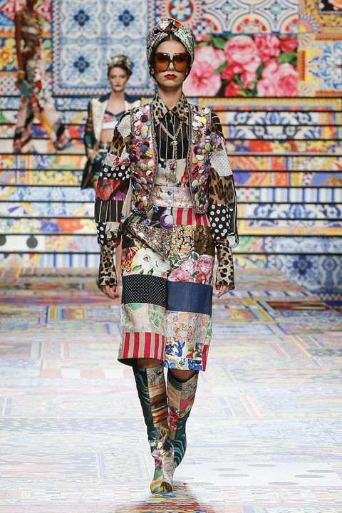
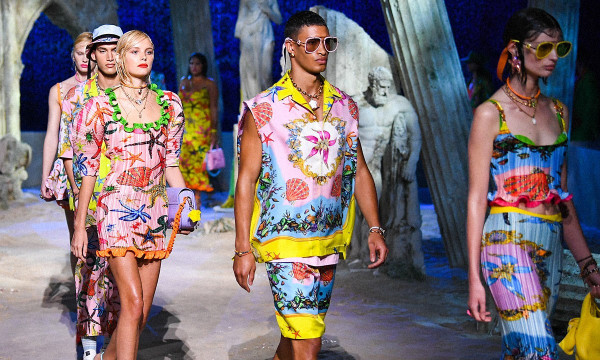

Cảm hứng thập niên 70s
Cảm hứng phong cách hoài cổ từ thập niên 70 tiếp tục được các nhà mốt quốc tế và giới mộ điệu ưa chuộng trong năm 2021. Trên sàn diễn Xuân - Hè 2021, ta bắt gặp hàng loạt các chi tiết mang hơi hướm này ở chất liệu vải nhung, vải denim; màu sắc tươi sáng; hoạ tiết hoa; cách sử dụng phụ kiện và cả phom dáng sản phẩm. Tuy nhiên, yếu tố thẩm mỹ thập niên 70s không bao trùm toàn bộ, mà nhấn nhá một cách tinh tế để các sáng tạo không rơi vào cũ kỹ, lỗi thời, mà tạo thành một “vòng quay” thời trang thú vị. Các nhà mốt áp dụng xu hướng này phải kể đến như Dolce&Gabbana với vẻ đẹp Sicily thân thuộc, Versace với hơi thở từ biển cả hay Burberry là cảm hứng hoà hợp thiên nhiên.
Burberry
Dolce&Gabbana
Sugary Candy – Tông hồng ngọt ngào
Mặc dù năm nay, pantone đưa ra màu chủ đạo của năm 2021 là vàng và xám, thì trên sàn catwalk, các nhà mốt đồng loạt sử dụng các tông hồng kẹo bông từ anh đào đến mâm xôi đầy ngọt ngào, dễ thương nhưng không kém phần quyến rũ. Sugary Candy không hoàn toàn chỉ đại diện cho sự nữ tính như baby pink, hay quyền lực, vương giả. biểu trưng cho sự dịu dàng chừng mực. Đó là lý do mà tông màu này được các thương hiệu sử dụng cho các mẫu thiết kế vừa nữ tính, vừa tinh giản nhưng thanh lịch và sang trọng. Màu sắc này như một sự xóa tan vẻ u buồn của năm cũ, mang đến nguồn năng lượng của hy vọng trong mùa hè này.
Dolce&Gabbana
Dolce&Gabbana